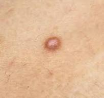
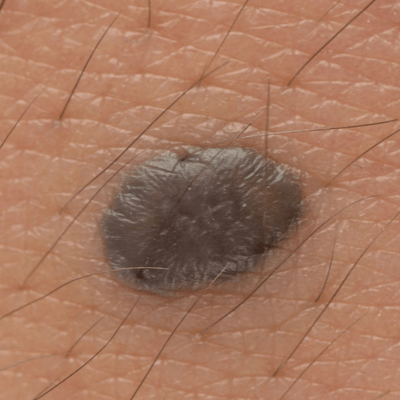
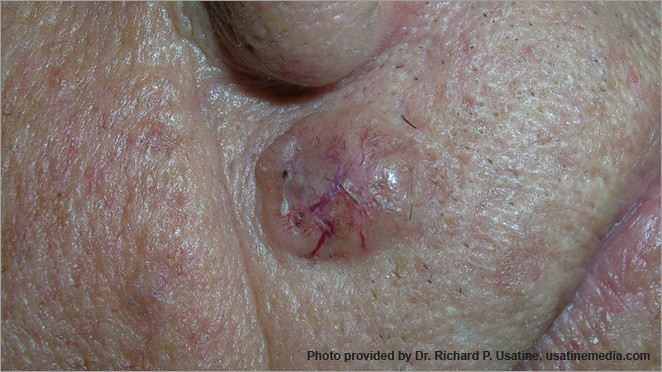
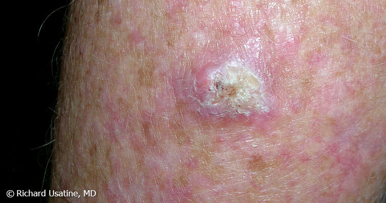
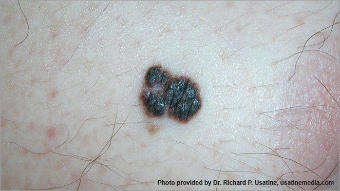
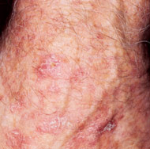

Skin Cancer Detection Tool
Upload a photo of a skin lesion or mole for AI-powered analysis. Our system evaluates potential risk factors and provides recommendations.
Upload Skin Image
Upload a clear photo of the skin area you want to analyze
Supported formats: JPG, PNG, HEIC • Max size: 10MB
Scan History
Benign Skin Lesions
These lesions are usually non-cancerous and generally harmless, though monitoring changes is still important.

Dermatofibroma
Dermatofibroma is a common benign skin growth that usually appears as a small firm bump.
- Firm raised bump
- Brown or reddish color
- Usually harmless

Nevus (Mole)
A nevus is commonly called a mole and is usually benign. Most remain stable over time.
- Round or oval shape
- Uniform color
- Stable appearance

Pigmented Benign Keratosis
Pigmented Benign Keratosis, also called seborrheic keratosis, is a common noncancerous skin growth with a waxy or scaly appearance.
- Waxy or rough texture
- Brown, black, or tan color
- Often appears with aging
Malignant & Precancerous Skin Lesions
These lesions may become cancerous or spread if left untreated. Early detection is very important.

Basal Cell Carcinoma (BCC)
Basal cell carcinoma is the most common skin cancer. It grows slowly and rarely spreads.
- Shiny bump
- Pink or red patch
- Bleeding sore

Squamous Cell Carcinoma (SCC)
SCC develops in the outer skin layer and can spread if untreated.
- Scaly patch
- Open sore
- Red nodule

Melanoma
Melanoma is the most dangerous type of skin cancer and may spread rapidly.
- Irregular shape
- Multiple colors
- Changing appearance

Actinic Keratosis (AK)
AK is a rough scaly patch caused by sun damage and may become cancerous.
- Scaly texture
- Pink or brown patch
- Sun-exposed areas
Understanding the ABCDE Rule
Use these warning signs to identify potentially dangerous moles:
One half of the mole doesn't match the other half
Edges are irregular, ragged, notched, or blurred
Color is not uniform and may include shades of brown, black, pink, red, white, or blue
Spot is larger than 6mm across (about ¼ inch – the size of a pencil eraser)
Mole is changing in size, shape, or color
Prevention Tips
Use broad-spectrum sunscreen with SPF 30+ daily
Wear hats, sunglasses, and long-sleeved clothing
Perform monthly self-exams and annual dermatologist visits
Stay in shade during 10am-4pm when UV rays are strongest